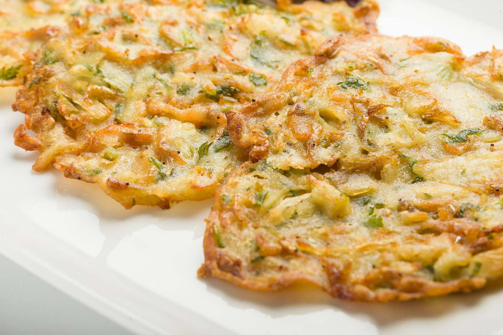
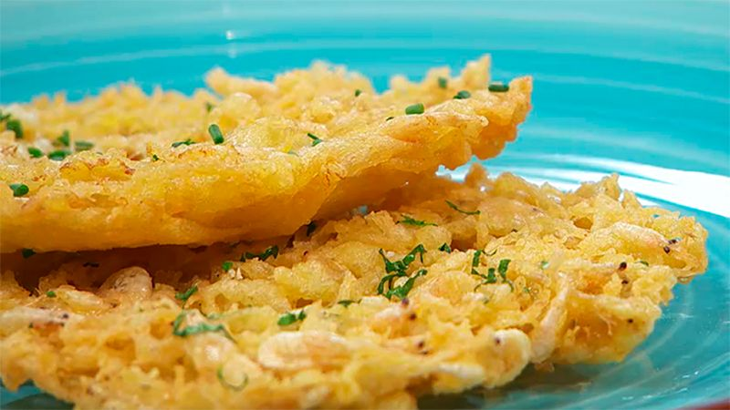
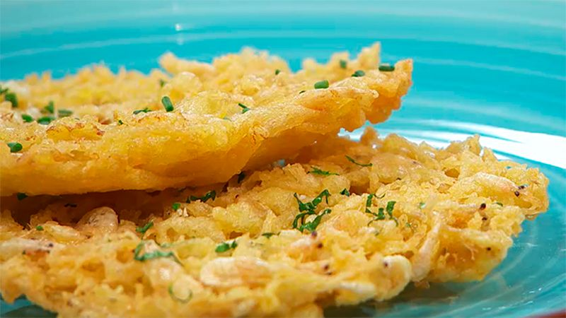
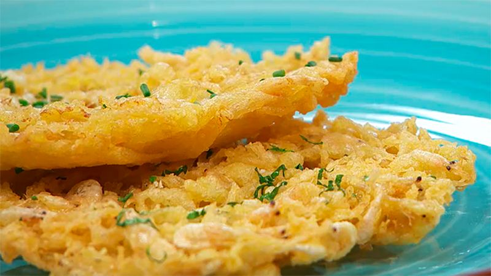
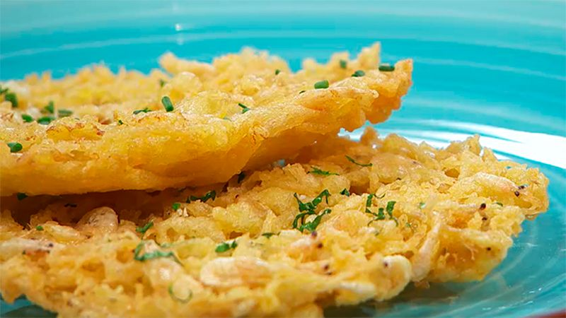

Galería

 


Las tortillitas de camarones son una especialidad gaditana, crujientes y llenas de sabor. Originarias de la provincia de Cádiz, especialmente de San Fernando, estas delicias combinan harina de trigo y garbanzo con camarones frescos, cebolleta y perejil. Se fríen hasta alcanzar una textura crujiente y dorada, siendo una tapa imprescindible en la gastronomía andaluza.
Las tortillitas de camarones son un emblema de la gastronomía gaditana, con una historia que se remonta a varios
siglos. Su origen podría situarse entre los siglos XVI y XVII en la Bahía de Cádiz, resultado de la fusión de la
cocina local con influencias italianas. La comunidad genovesa, asentada en Cádiz desde el siglo XIII, introdujo
preparaciones como la "farinata", una torta elaborada con harina de garbanzo y agua. Al combinar esta técnica
con ingredientes locales, como los camarones de las marismas gaditanas, surgieron las primeras versiones de las
tortillitas.
Con el tiempo, la receta evolucionó. A principios del siglo XX, en la Venta de Vargas de San Fernando, la
cocinera María Picardo innovó la preparación al ajustar la proporción de harinas y utilizar sifón en lugar de
agua, logrando una textura más fina y crujiente.
Hoy en día, las tortillitas de camarones son una tapa imprescindible en la provincia de Cádiz, disfrutadas tanto
por locales
como por visitantes.
Ingredientes:
Pasos:
